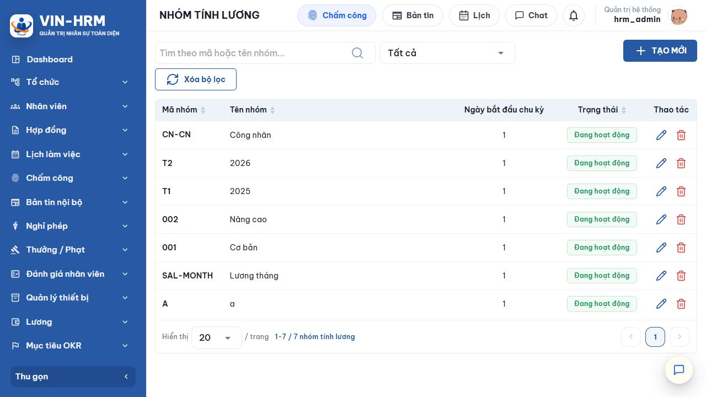
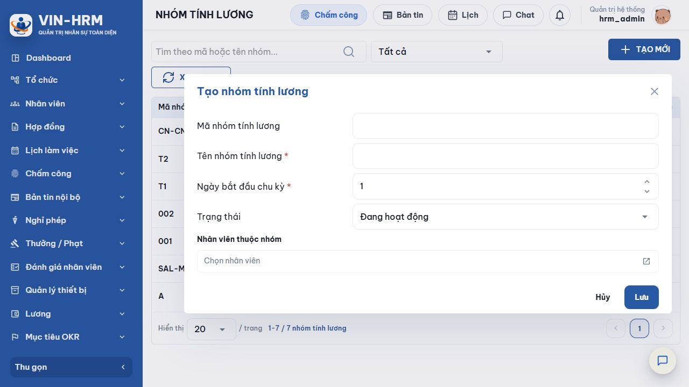

1. Mục đích và phạm vi
Nhóm tính lương gom nhân viên có cùng ngày bắt đầu chu kỳ lương và làm phạm vi lọc, chạy lương, áp dụng hệ số OT. Mỗi nhân viên chỉ có một nhóm tại một thời điểm trong thông tin công việc.
2. Truy cập
Mở Lương → Nhóm tính lương. Chức năng cần quyền quản lý lương.

3. Đọc màn hình danh sách
| Cột/Bộ lọc | Ý nghĩa |
|---|---|
| Tìm theo mã hoặc tên | Tìm nhanh nhóm cần quản lý. |
| Trạng thái | Tất cả, Đang hoạt động hoặc Ngừng hoạt động. |
| Mã nhóm | Định danh duy nhất, được chuẩn hóa chữ in hoa. |
| Tên nhóm | Tên nghiệp vụ, duy nhất trong doanh nghiệp. |
| Ngày bắt đầu chu kỳ | Ngày trong tháng bắt đầu một kỳ lương của nhóm. |
| Thao tác | Sửa hoặc xóa; trạng thái được chọn trong biểu mẫu. |
4. “Ngày bắt đầu chu kỳ” là gì?
Đây là ngày mở đầu của kỳ lương một tháng. Ngày kết thúc là ngày ngay trước cùng mốc của tháng kế tiếp.
| Ví dụ | Kết quả |
|---|---|
| Ngày bắt đầu = 1, chạy lương tại 10/08/2026 | Kỳ lương 01/08/2026–31/08/2026. |
| Ngày bắt đầu = 15, chạy lương tại 10/08/2026 | Vì ngày chạy chưa đến ngày 15, kỳ lương là 15/07/2026–14/08/2026. |
| Ngày bắt đầu = 15, chạy lương tại 20/08/2026 | Kỳ lương là 15/08/2026–14/09/2026. |
| Giới hạn thực tế của bộ tính lương Biểu mẫu hiện cho phép lưu giá trị 1–31, nhưng dịch vụ tính lương hiện chỉ chấp nhận từ 1 đến 28. Để tránh lỗi “Ngày bắt đầu chu kỳ lương phải từ 1 đến 28”, hãy cấu hình trong khoảng 1–28. |
5. Tạo nhóm tính lương

- Chọn Tạo mới.
- Nhập mã theo quy ước hoặc để trống để hệ thống sinh mã; nhập tên nhóm bắt buộc.
- Nhập ngày bắt đầu chu kỳ, khuyến nghị 1–28.
- Chọn trạng thái.
- Tại Nhân viên thuộc nhóm, mở bộ chọn và đánh dấu các nhân viên cần gán.
- Chọn Lưu, sau đó kiểm tra danh sách và một hồ sơ nhân viên mẫu.
| Trường/Lựa chọn | Giải thích |
|---|---|
| Mã nhóm tính lương | Khi tạo có thể để trống để tự sinh; sau khi lưu phải có mã duy nhất. Tối đa theo mô hình dữ liệu là 50 ký tự. |
| Tên nhóm tính lương | Bắt buộc, tối đa 255 ký tự và không trùng tên đã có. |
| Ngày bắt đầu chu kỳ | Số ngày trong tháng; dùng để xác định FromDate/ToDate cho mọi nhân viên của nhóm. |
| Đang hoạt động | Nhóm được dùng khi chọn nhân viên và tính lương. |
| Ngừng hoạt động | Nhân viên thuộc nhóm này bị xem là có cấu hình công việc không hợp lệ khi chạy lương. |
| Nhân viên thuộc nhóm | Chỉ nhân viên đã có thông tin công việc mới gán được. Gán vào nhóm này sẽ thay thế nhóm lương trước đó của nhân viên. |
6. Nhóm được dùng khi tính lương
- Trước khi tính lương, hệ thống yêu cầu các nhân viên trong phạm vi phải được gán nhóm tính lương.
- Nhân viên được gom theo Nhóm và Ngày bắt đầu chu kỳ; mỗi nhóm có thể tạo một khoảng kỳ lương khác nhau.
- Nhóm được dùng để lọc nhân viên và kết quả bảng lương.
- Hệ số OT có thể áp dụng riêng cho một nhóm; cấu hình theo nhóm được ưu tiên hơn cấu hình “Tất cả”.
| Cấu hình liên quan Không có khóa riêng tại Hệ thống → Cấu hình. Các phụ thuộc trực tiếp là thông tin công việc của nhân viên, cấu hình lương cơ bản, Hệ số OT và kỳ lương. |
7. Sửa, ngừng hoạt động và xóa
| Tình trạng nhóm | Thao tác được phép/khuyến nghị |
|---|---|
| Chưa dùng để tính lương | Có thể sửa mã, tên, ngày chu kỳ, trạng thái và danh sách nhân viên. |
| Đã dùng để tính lương | Không được đổi mã hoặc ngày bắt đầu chu kỳ. Có thể đổi tên và trạng thái. |
| Đang được Hệ số OT tham chiếu | Không thể xóa cho đến khi xử lý các cấu hình OT liên quan. |
| Chưa có kết quả lương, không có OT tham chiếu | Có thể xóa; hệ thống gỡ gán nhóm khỏi các hồ sơ công việc đang gán. |
| Đã có kết quả lương | Không thể xóa. Nên chuyển Ngừng hoạt động để giữ lịch sử. |
8. Lỗi thường gặp
| Thông báo | Cách xử lý |
|---|---|
| Mã/Tên nhóm đã tồn tại | Tìm nhóm cũ hoặc chọn mã/tên khác. |
| Nhân viên chưa có thông tin công việc | Hoàn thiện thông tin công việc trước khi gán nhóm. |
| Áp dụng nhóm cho tất cả nhân viên trước khi tính lương | Bổ sung nhóm cho các nhân viên còn thiếu. |
| Ngày bắt đầu chu kỳ phải từ 1 đến 28 | Sửa nhóm về giá trị 1–28 rồi chạy lại. |
| Không thể sửa mã/ngày chu kỳ vì đã dùng | Giữ nguyên các trường lịch sử; nếu cần chính sách mới, tạo nhóm mới và chuyển nhân viên từ kỳ phù hợp. |
| Không thể xóa vì đã dùng trong hệ số OT | Ngừng/xóa cấu hình OT tham chiếu theo đúng quy tắc trước. |
9. Danh sách kiểm tra
- Mã và tên duy nhất.
- Chu kỳ nằm trong 1–28.
- Nhóm đang hoạt động.
- Đủ nhân viên cần tính lương.
- Mỗi nhân viên có thông tin công việc.
- Hệ số OT đúng theo nhóm.